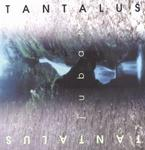

| Artist: | Tantalus |
| Title: | Jubal |
| Label: | Headline HDL 504 |
| Length(s): | 73 minutes |
| Year(s) of release: | 2000 |
| Month of review: | [06/2001] |
| 2) | When You Turn | 6.53 |
| 3) | Route Forty Nine (part One) | 4.48 |
| 4) | Dance Me A Song | 5.47 |
| 5) | Neon City | 5.42 |
| 7) | Night Flight | 6.58 |
| 8) | Gasp (gasp, Silk On A Cloud, Reaching For Life) | 9.32 |
| 9) | Sun Quay | 2.42 |
| 10) | Time Will Tell | 6.25 |
| 11) | Footprints (walk Alone, Moment In Time) | 6.04 |
When You Turn is a bit more frolic. I am not that happening with the fast vocal part in this track. There is plenty of variation in here though with some nice keyboard parts and after one of those high paced vocal parts some time taken for some more moody playing.
Route Forty Nine (Part One) is a waltzy piece with quite a bit of keyboards again. Actually the guitars have mainly a supporting role up to now, and the keys make for the extra taste. Some of the kleys in this tracks are of the repetitive type, some are highly melodic, but mostly there is just much of it on this very symphonic track. The break comes rather abruptly, making us return to base, a repetitive and moody part in between.
After that instrumental we come to Dance Me A Song. It opens with playful piano and the melody is really not bad. The first few minutes are a bit too straightforward but we get a rather urgent break in the middle leading to fast keyboards with some rather groovy soloing on the guitar. A fiddly keyboard brings us back to the vocal part. The drums sound programmed here, and this in the presence of a real drummer. The song ends with a break.
Fast, hammered piano opens Neon City. It is followed by Pendragonish guitar work, but the mainline of the track is a really nice piano run. The song really has some trouble getting started, there is so much happening here. You hear a nice tune and then it is gone again. Too bad. Heavy guitars, a sinister, plodding vocal part mainly characterize this track. The chorus is much more melodic with some keyboards shining through and bubbling over. The song ends rather optimistically and abruptly.
Acoustic guitar and a good vocal melody part make for a strong vocal track on Peas And Queues. On Night Flight we see the length of tracks increasing. In a way I have a Yes-feeling in this track. The music continues to be very keyboard dominated, but with a strong drum presence on this track. The song also has some pace and signature changes and also a spacey intermezzo in the middle with strong melodic guitar a la Barrett. It is followed by some stately keyboards (thinking back to the old Yes days).
Gasp is a longish track. After a rather catchy and accessible first part we come to a percussive interlude with the voices of people making a for a party rumour kind of thing. The vocalist continues to sing in soft repetitive fashion. With a Yes kind of optimism the song continues then. I am not that fond of this part, a bit too merry.
Sun Quay is a short but fiddly keyboard track. It is followed by the strongly thematic, somewhat melodramatic Time Will Tell. It has a great melodic opening, grand and emotional. The subtle piano melody that follows is also spot on. I have heard this disc a few times only, but it surprising how familiar many of the parts sound already. After a few minutes the vocal part starts, it is followed by a varied guitar solo which opens rather straightforwardly but becomes more tense in a subtle way. Has quite a bit of Pendragon in there.
This also holds for the next track, the up-tempo opening Footprints. Quite a bit of organ, long chords on the guitar on this rather rocky track. At the end the keyboards start their show with a Banksian style build-up to crescendo.
The final and longest track is Now's The Time. The track opens with slow thunder. The first vocal part is accompanied by some hasty lightfooted percussion. The sad vocal melody is really good and perfectably memorable. With only a single idea the band can fill five minutes easily. After five minutes the music changes: the thunderclouds return, we get some dark filmic music on the keyboards. I am now awaiting what is to come...something has to come. Slowly the guitar gets to work, but the expected eruption will not come. The song stays subdued, but impresses nonetheless. The most mature sounding piece on the album.